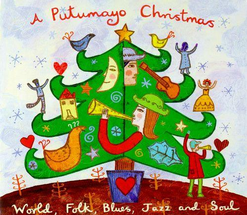

6 min read

On Christmas day in 1863 American poet Henry Wadsworth Longfellow wrote “Christmas Bells.” This was the middle of the American Civil War, and the poet's heart was heavy with the toll being taken on his country by this tragic and prolonged conflict.
Longfellow's words from this poem have been set to music by a number of different composers and performers, starting as early as 1872.
There are a number of contemporary recordings based on this poem, but the one with which I am particularly taken is a rather obscure track by John Gorka. The music here is Gorka's, and doesn't seem to share anything with other musical renditions of the poem. Gorka dropped three of the stanzas, including those most directly referencing the Civil War, leaving him with four verses for his song.
Longfellow's words are affecting, but for me the addition of Gorka's voice, guitar and music are magical, adding a depth and resonance and immediacy otherwise lacking. Other performers seem to approach the lyrics as if they were conscientiously bringing out an old relic to be revered; Gorka, in contrast, entirely inhabits the world created by these words.
Unfortunately, Gorka's recording doesn't seem to be available within Apple Music. Luckily, there is a YouTube “video” that combines the original audio recording with an image of an old album cover. You can listen to it here.
Part of the beauty of a poem, and a song, is the ability to compress complex thoughts and feelings into a very few words. Let's see what Longfellow and Gorka are doing here.
I heard the bells on Christmas Day,
Their old, familiar carols play.
Wild and sweet, the words repeat,
Of peace on earth, goodwill to men,
Peace on earth, goodwill to men.
The first verse invokes a strong sense of continuity and tradition and repetition, yet also introduces this striking description of the angelic words that follow as being “wild and sweet.” With these few words, Longfellow and Gorka add something fresh to these traditional words and images, bringing a new emotional immediacy to these otherwise well-worn phrases.
I thought how, as the day had come,
The belfries of all Christendom
Had rolled along the unbroken song
Of peace on earth, goodwill to men,
Peace on earth, goodwill to men.
The second verse introduces a more personal perspective, but continues the feelings of continuity and tradition, talking again about church bells and carols, but now using more original language.
And in despair I bowed my head;
“There is no peace on earth,” I said;
"For hate is strong, and mocks the song
Of peace on earth, goodwill to men."
Peace on earth, goodwill to men.
The third verse presents us with a crisis of faith for the singer, as he comes to believe that the words and carols of the season are empty and hollow. And, of course, with the other stanzas more specific to the American Civil war omitted, this verse is as applicable to those of us listening in 2020, as it was for Longfellow in 1863: we don't have to look far to find people, words, images and deeds around us everyday that seem to mock our human aspirations for “peace on earth, goodwill to men.”
Then pealed the bells more loud and deep:
"God is not dead, nor doth He sleep;
The Wrong shall fail, the Right prevail,
With peace on earth, goodwill to men."
Peace on earth, goodwill to men.
Now comes the resolution in the fourth verse. We are presented with a simple and straightforward response to the singer's despair: “God is not dead, nor doth He sleep; The Wrong shall fail, the Right prevail.” But who speaks this message? It's introduced with the phrase, “Then pealed the bells more loud and deep.” So seemingly, as the church bells continue to peal, they now strike a new note in the singer's consciousness, and one that brings him this reassurance.
I heard the bells on Christmas Day,
Their old, familiar carols play.
Wild and sweet, the words repeat
Of peace on earth, goodwill to men,
Peace on earth, goodwill to men.
And now, finally, we hear the first verse again, indicating that the singer's faith has been restored.
Notice the many elements of repetition in the song:
The words “peace on earth, good will to men,” repeated as the last two lines of each verse, but also repeated at the end of every verse, so that they are used almost as a mantra;
The use of the word “repeat” in the first verse, explicitly referring to the repetition of the words cited above;
Mentions of carols and bells in almost every verse;
The appearance of a rhyme – a repetition of a sound – within the third line of each verse, as in “wild and sweet, the words repeat”;
The repetition of the first verse in its appearance also as the last verse.
I point these out because, it seems to me, this idea of repetition, of carrying on traditions, is at the very core of this work. In some ways, this is a song about the importance of songs, about the importance of embodying our values in words and music, then hearing those songs anew each year, and using those rehearings to renew our faith.
Of the Christmas songs I've written about so far, this is the one that is most unapologetically Christian. So let me take a moment to explain why a song like this is meaningful to me, even though I consider myself, along with Jackson Browne, to be a more of a “heathen and a pagan” than a devout Christian.
The primary message here, of “Peace on earth, goodwill to men,” is as humanistic as it is Christian. And so, while I acknowledge the source of these particular words as coming from the Christian Bible, I don't think a listener has to be a member of the Christian faith in order to appreciate their intent.
Although the singer refers to Christian churches playing the carols that are important to him, there is nothing specific enough here to require any particular acceptance of Christian doctrine.
Although God seemingly makes an appearance in the third verse, keep in mind that these are not the angels talking to the singer, but the bells themselves reminding the singer of the messages found in the carols.
Although part of the singer's reassurance comes from the understanding that “God is not dead, nor doth he sleep,” I take this as meaning that there is a moral compass available to humanity, as reinforced by the following words, “The wrong shall fail, the right prevail.” Or, as Martin Luther King Jr. once said, “The arc of history is long, but it bends towards justice.” I don't think one needs to believe in a Christian God, or any sort of God at all, to take heart in any of these roughly equivalent words.
So, in some way, with this series of “Words about Songs” about Christmas, I'm working to the same purpose expressed in this song: to encourage all of us to listen more closely and more appreciatively to the best of this seasonal music, and to find renewed inspiration from these songs in this and every holiday season.
Next: “Christmas Must Be Tonight” by The Band
Or see the complete list of Christmas Favorites from The Practical Utopian.